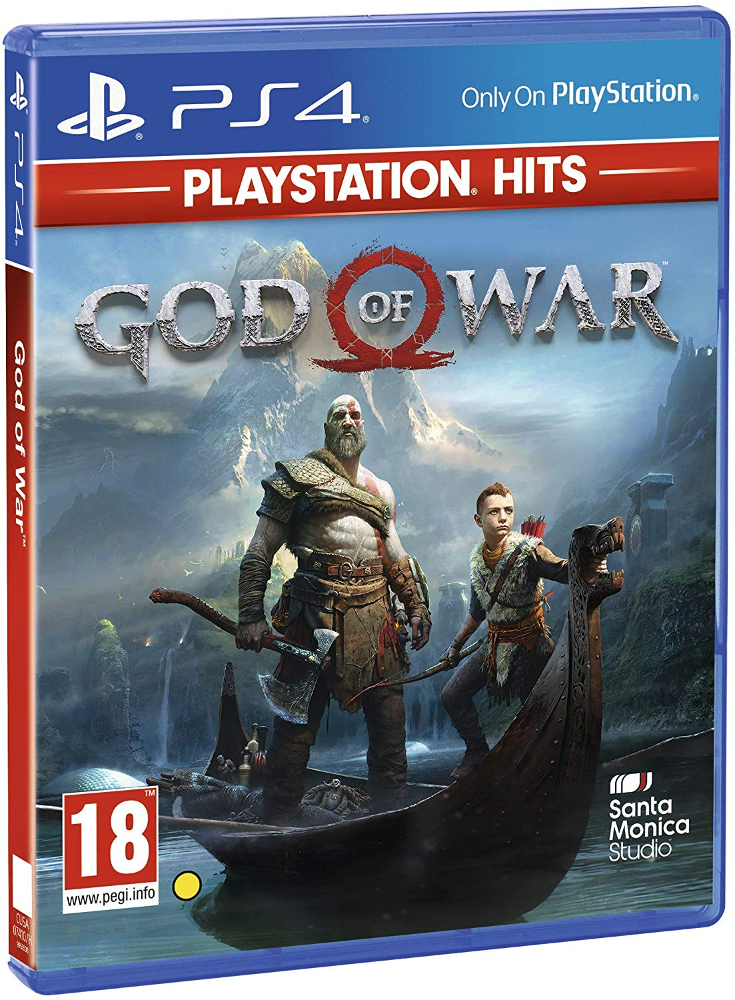
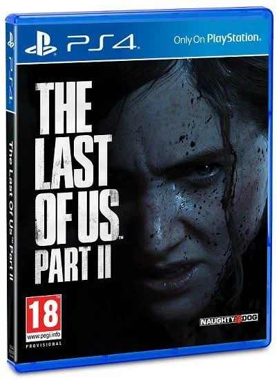
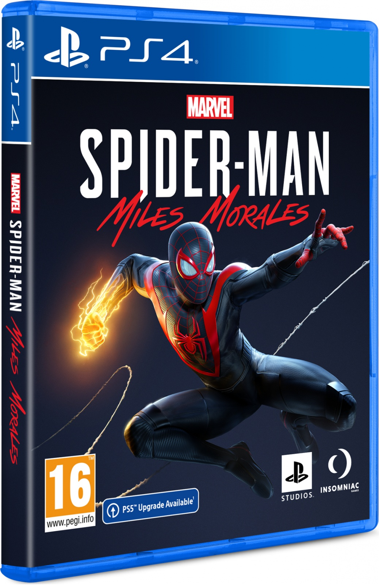
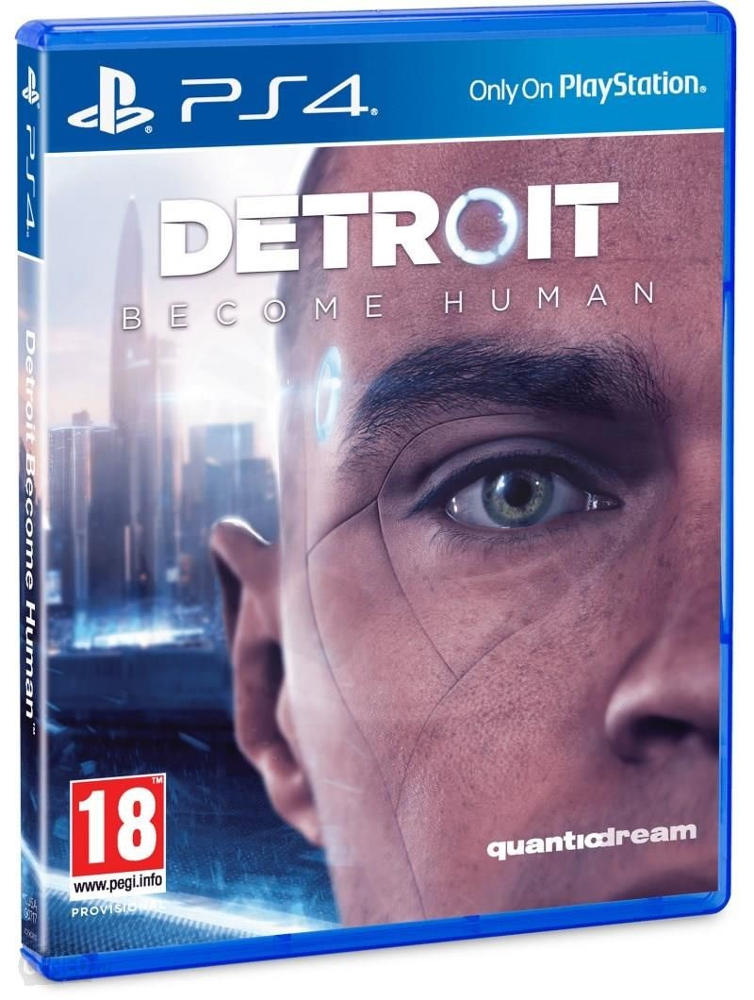
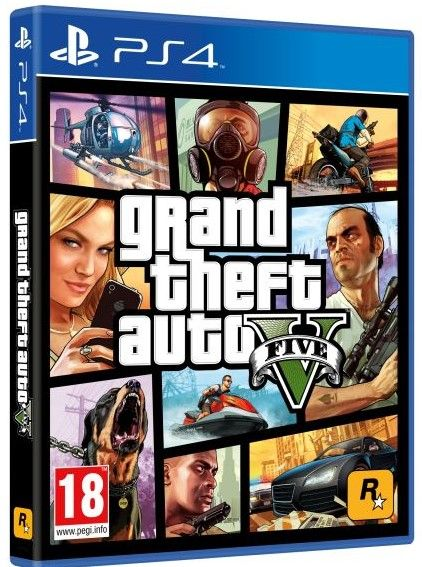
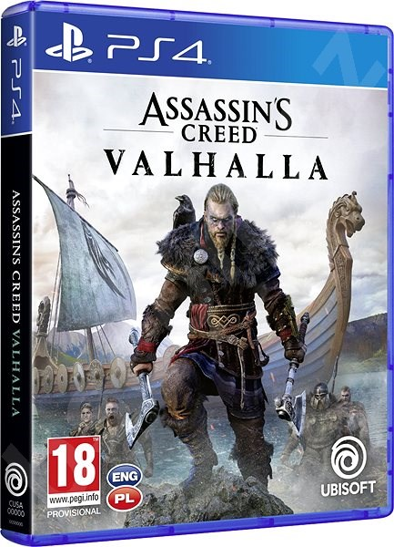
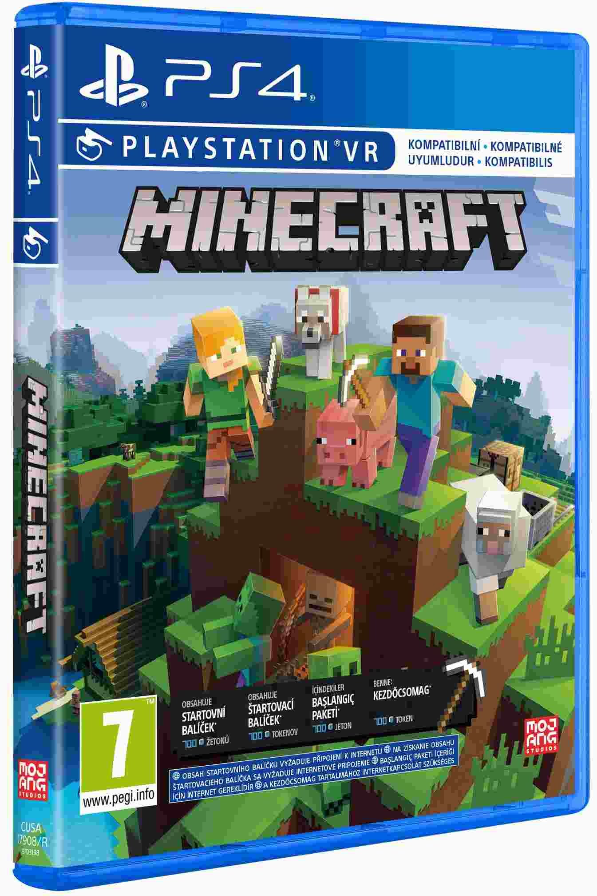
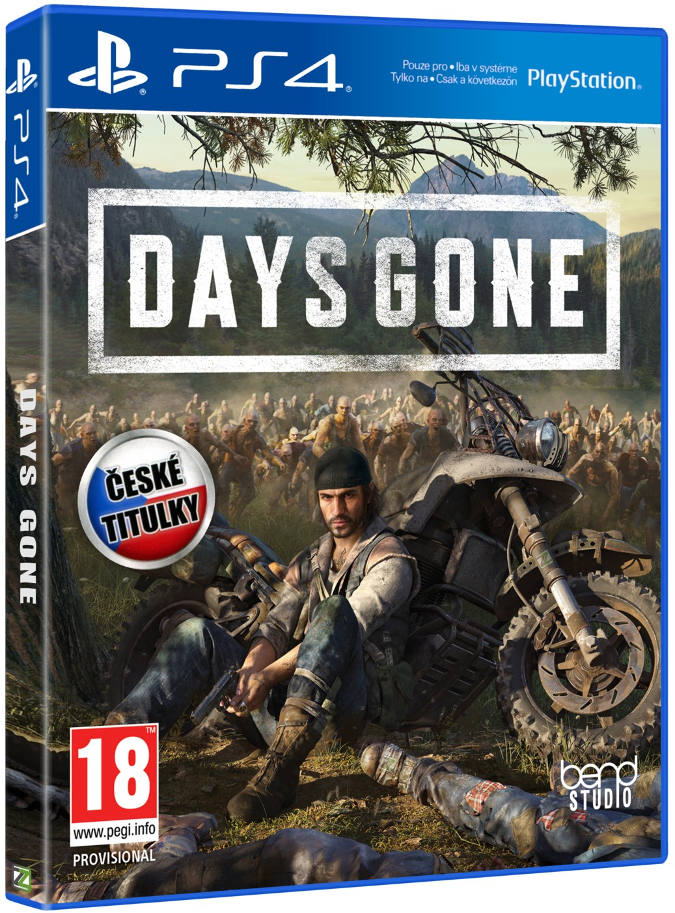
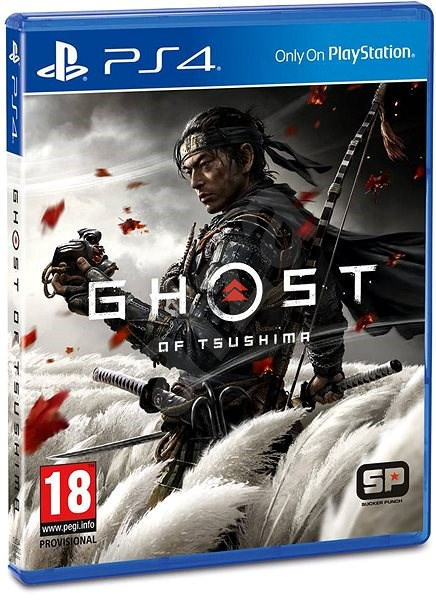

Nejlepší hry pro PlayStation 4
Akční videohry
Akční videohra nebo též akční hra (anglicky action video game, action game) je videoherní žánr, jehož hlavní náplní je eliminace cílů pomocí bojových technik. Tyto hry většinou virtuálně znázorňují dynamické boje, násilné sekvence (včetně prolévání krve) a škálu zbraňového arsenálu.
God of war - PS4
Vývojář: Santa Monica studio
Datum vydání: 20. dubna 2018
Hodnocení: 10/10
České titulky: ano
O hře: God of War - čtvrtý díl pro PlayStation 4. O mnoho let později se Kratos pokusil najít klid na dalekém severu, kde se znovu oženil s ženou jménem Faye, s níž zplodil syna Átrea. Ovšem poté, co Faye umírá a její pozůstalí jsou napadení ásem Baldrem, musí se bránit proti útokům severských bohů, vedeným všeotcem Ódinem. Cílem jejich cesty je pak Jotunheim, kde musí bývalý bůh války rozprášit popel své druhé ženy, zatímco popel té první, jenž nosí stále na svém těle, musí se svou minulostí skrýt před synem Átreem. Dostává tedy druhou příležitost být otcem, kterým nedokázal být svému prvnímu dítěti.
The Last of Us Part II - PS4
Vývojář: Naughty Dog
Datum vydání: 19. června 2020
Hodnocení: 10/10
České titulky: ano
O hře: Druhý díl The Last of Us začíná skoro až idylicky. Městečko Jackson vzkvétá, jeho obyvatelé mají relativně bezpečné útočiště a v rámci možností tu žijí vlastně spokojeně. Joel se usadil a z Ellie se po pár letech stala dospělá ženská. Dokonce se účastní hlídek v okolí, které mají Jackson chránit před nakaženými.
Marvels Spider-Man: Miles Morales - PS4
Vývojář: Insomniac games
Datum vydání: 12. listopad 2020
Hodnocení: 9/10
České titulky: ano
O hře: Miles, který chce žít normální život, je nešťastný. Zpočátku mu není dobře při představě, že by měl nasazovat svůj život a předvádět hrdinské činy. Nicméně osudovým zlomem se stala smrt Spider-Mana - Petera Parkera. Mladý Miles Morales si uvědomí, že mu mohl pomoci a pocítil vinu za ztrátu jeho života.
Detroit Become Human - PS4
Vývojář: Quantic Dream
Datum vydání: 24. dubna 2018
Hodnocení: 10/10
České titulky: ano
O hře: Detroit: Become Human je jako drahý hollywoodský blockbuster, jehož děj můžete sami ovlivňovat. Pokud dokážete občas přimhouřit oči nad dírami ve scénáři, nabídne vám fascinující zážitek, který by si měl prožít každý fanoušek sci-fi.
Grand Theft Auto V (GTA 5) - PS4
Vývojář: Rockstar games
Datum vydání: 17. září 2013
Hodnocení: 10/10
České titulky: ne
O hře: Příběh se odehrává v Los Santos – velkoměstě známém již ze hry Grand Theft Auto: San Andreas. Město se nachází ve fiktivním státě San Andreas. Hra má tři hlavní postavy – Michael, Trevor a Franklin, mezi nimiž si hráč bude moci přepínat.
Assassins Creed Valhalla - PS4
Vývojář: Ubisoft
Datum vydání: 10. listopadu 2020
Hodnocení: 8/10
České titulky: ano
O hře: Assassin's Creed: Valhalla je krvavá pouť vikingů. McDevitt zasadil události do roku 873, éry vikinských nájezdů do oblasti dnešní Anglie. Příběh vikinga Eivora přitom začíná velmi komorně, byť pracuje s řadou klišé a popkulturní představou o světě vikingů
MInecraft - PS4
Vývojář: Mojang Studios
Datum vydání: 18. listopadu 2011
Hodnocení: 10/10
České titulky: ano
O hře: Minecraft je počítačová hra, která se odehrává v otevřeném světě, kde má hráč neomezenou svobodu pohybu a činnosti. ... Celý herní svět se skládá z kostek, které představují nejrůznější materiály s různorodými vlastnostmi. Hru lze hrát v režimu singleplayer (hra pro jednoho hráče), nebo multiplayer (hra pro více hráčů).
Daysgone - PS4
Vývojář: SIE Bend Studio
Datum vydání: 26. dubna 2019
Hodnocení: 8/10
České titulky: ano
O hře: Days Gone se odehrává v americkém Oregonu. Hlavní postavou našeho příběhu je motorkář Deacon St. John, který po vypuknutí jakési “zombie” pandemie, přišel o vše, co miloval a pro co žil. Jako tuláci, on a jeho nejlepší přítel Boozer, cestují po Oregonu a za různě vysoké odměny vypomáhají ostatním přeživším v tom…
Ghost of Tsushima - PS4
Vývojář: Sucker Punch Productions
Datum vydání: 17. července 2020
Hodnocení: 9/10
České titulky: ano
O hře: Jin Sakai, hrdina herního titulu Ghost of Tsushima, úspěšně odrazil invazi mongolských nájezdníků na ostrov Tsushima, tím však jeho příběh nekončí. Nově se bude muset vypořádat s nebezpečím na přilehlém ostrově Iki, které do jeho příběhu vnáší prvek mysticismu a také lítý boj s osobními démony.
David Švancar © 2021